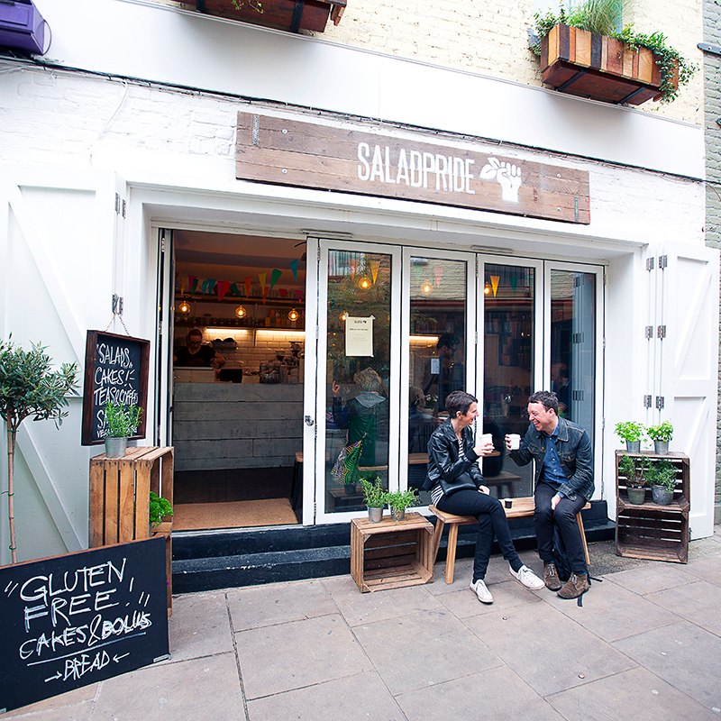

Farmacy

Set in Notting Hill, Farmacy is a restaurant with the health conscious foodie at heart. Whilst it certainly caters for special diets, vegan and gluten free included, it feels like a grown up restaurant. The staff are friendly and knowledgeable but most importantly the menu is exciting. The first time I visited I was really watching what I ate as I was planning my wedding. I felt spoilt for choice, there were so many dishes that I could eat. It was a revelation following months of limp salads.
The Earth Bowls come with a beautiful variety of colours, textures and flavours.
More recently I visited with my husband, a meat loving individual, he was surprised by how delicious the food was. The brownie sundae was a particular hit. I have to say I have a plate of the nachos every time I visit.
Dalloway Terrace

The Dalloway Terrace is nestled behind Oxford Street on the side of a smart hotel. It's tastefully decorated to feel premium without begin stuffy. It a lovely option for lunch with clients, brunch with girlfriends or afternoon tea with mothers.
The menu is varied with plenty of options for special dietary restrictions, those counting calories and everyone else too. I take clients here because I appreciate the ability to eat 'well' whilst they are able to have have a treat.
Whilst the service isn't the fastest in London, the staff are attentive and discreet.
Salad Pride - Neal's Yard

Salad Pride was started when the owner was unable to find food he wanted to eat at lunch. It's somewhere I visit often with girlfriends at lunchtime. The food is all vegetarian friendly with vegan options too. It's all also gluten free.
The food is all freshly made to order in the open kitchen. In our experience it's all beautifully fresh and tasty. You can pick from salad bowls, think spirallised courgette rather than salad, to Budda bowls. You can even
build your own. It's not a posh place to eat and slightly on the pricier side but I've not been disappointed by anything I've eaten there yet. In my most recent visit I shared the banana chocolate bread with a colleague. It was blissful. What more does a girl want in a lunch spot, delicious and filling bowls and treats that are worth the calories if you're feeling that way inclined.